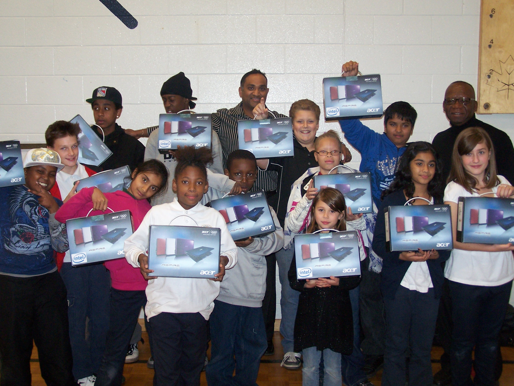
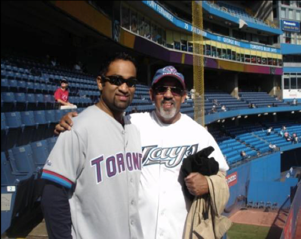

NavaCup is a movement dedicated to bridging the digital divide among Canada's youth — one laptop, one student, one life at a time.

The NavaCup is the annual golf tournament organized by NavaCup Charity Events. The purpose and focus of this event are to raise funds to bridge the digital divide among Canada's youth.
All proceeds from the tournament go towards purchasing brand-new laptop computers, which are awarded to deserving students within Greater Toronto Area communities.
Through our efforts and those of our partners, we aim to address the ever-widening digital divide that has been overlooked by the public and private sectors for far too long.
The NavaCup initiative provides computers to primarily (but not restricted to) BIPOC at-risk youth, regardless of gender or religious views.
Raise funds specifically to purchase new, brand-new laptop computers for students in need.
Provide computers to deserving students from under-privileged families in the GTA.
Set up computer work-labs and tutoring sessions within community organizations where applicable.
Mentor and augment students' knowledge of computing to maximize the impact of every device.
Actively reduce the gap between those with access to technology and those without.
Work with the Boys and Girls Club and IMAN program at UofT Scarborough.
Canadians are making greater use of the Internet, but a digital divide persists. Almost three-quarters of Canadians aged 16 and older went online for personal reasons — but access is far from equal.
People in urban areas were more likely to use the Internet than those in smaller towns. Only 65% of residents in rural areas accessed the Internet, well below the national average.
Among those born in Canada, 75% used the Internet, compared with 66% of those born elsewhere. Among recent immigrants, usage was even lower — particularly those who arrived in the last 10 years.

My name is Ganesh Navaratnarajah. Born in Colombo, Sri Lanka, my family eventually settled in Scarborough, Ontario in 1986. I attended C.B. Little Jr. Public School and won the French award in 1987 upon graduating from grade 6.
My life took a significant turn when my father convinced my mother to purchase a computer for me — a 4860x33 with 4MB of RAM. Over days and weeks I became proficient, disassembling and reassembling it, upgrading components. As the PC evolved, so did my knowledge.
After graduating from Toronto Metropolitan University as an Aerospace Engineer, I chose IT. I had the knowledge through that first PC — the trusty 4860X33. Stemming from that one computer, I have had the privilege of traveling the world on various IT consulting initiatives.
In honor of my father, whose name was "Nava," I named my annual golf tournament after him. All proceeds go towards purchasing laptops and funding programs combining digital literacy and youth development, in partnership with the Boys and Girls Clubs of East Scarborough and the IMAN program at UofT Scarborough.
My father always instilled in me the importance of trying, regardless of the odds. Let's not make the Nava Cup just a fundraiser, but a movement.
"One Love"
— Bob MarleyNavaCup is grateful to every sponsor, hole supporter, and community partner who makes our mission possible.
Major Sponsors
2025 Hole Sponsors